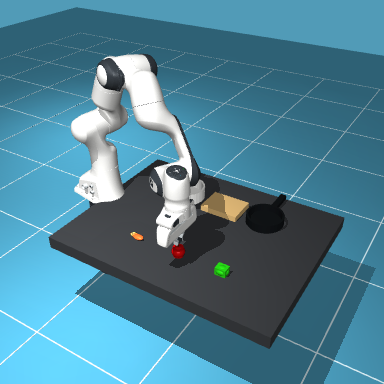
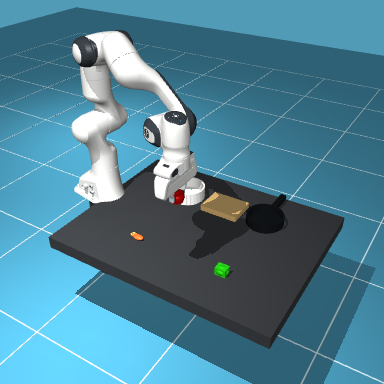

数据闭环验收 · 实际物理执行 · 未启动VLM训练
Cover / Blocks
归因训练数据的第一批真实样本
实际只有4个scene-seed上下文，不是32个独立场景
重复干预存在相同像素，图像数不等于独立证据数
train 112，validation 112；不是OOD评测
1. 本轮实际覆盖范围
Cover采apple、pepper的桌面抓取；Blocks采yellow、red抓取。场景保留完整其他对象与支撑，但只执行pick，不执行放置、释放或回HOME。历史真实LM生成的apple抓取源码被按哈希锁定并迁移复用；参数故障是在其AST中加入抓取高度偏移，明确是人工派生程序，不是新的LM生成。
| 条件 | 构造方式 | 注意 |
|---|---|---|
| 正常 | 正确契约＋原始历史程序 | 只检查本次pick，不推断整任务可靠性 |
| 策略参数失配 | Oracle返回抓取点后，程序将目标z提高45mm | 真实运动后闭爪失败；没有修改感知结果或直接制造“失败”状态 |
| 契约效果遗漏 | 从pick模型del集合遗漏 empty() | 抓取可以物理成功，但模型错误预测手仍为空；仅修改声明不提升物理能力 |
| 混合 | 参数失配＋上述效果遗漏 | 调好参数可能只得到局部进展，模型仍不一致 |
这是比计划中的Clear/目标占用更小的切片。先用可确定计算的effect omission验收数据字段、标签时间与双层结果分离；还没有为Cover新增清障技能，也没有采集自然程序失败、广泛缺前提或未知机制。漏del(empty)还可能触发符号互斥检查，因此属于易检测schema故障，不应作为归因模型的难任务来宣传。
所有组执行：不改、只修模型、只修策略、二者修订四个干预。四分支分别新建MuJoCo状态并实际执行，不共享成功缓存；使用独立进程并行。每组核验相同初态以及非目标层哈希不变。
2. 实际采集结果：不能把契约改善说成物理改善
| 场景 | 干预 | 物理抓取成功 | 契约一致 |
|---|---|---|---|
| Cover | 不改 | 8/16 | 4/16 |
| 只修模型 | 8/16 | 8/16 | |
| 只修策略 | 16/16 | 8/16 | |
| 二者修订 | 16/16 | 16/16 | |
| Blocks | 不改 | 8/16 | 4/16 |
| 只修模型 | 8/16 | 8/16 | |
| 只修策略 | 16/16 | 8/16 | |
| 二者修订 | 16/16 | 16/16 |
128次试次全部有效。物理抓取判据包含真实双指力、提升高度、滑移/接触中断、运动跟踪、相关碰撞、无weld及短持握窗口；契约检查单独比较完整状态转移。只修模型时，物理成功数完全没变。上述比例是固定干预矩阵的响应，不是自主修复模型准确率。
四结果响应模式分别出现8组正常、8组策略、8组契约、8组混合；这些只是组内干预响应类别，放在私有审计里，未直接作为唯一根因送给学生。
3. 同步采集了哪些证据
- initial、approach、descend、close_gripper、lift、action_end及适用时holding_window阶段，overview/front同步。
- 在截图前刷新MuJoCo派生状态，检查当前body位置与qpos一致；两相机之间不推进物理步。
- 记录状态、全部相关物体位置/姿态/速度、TCP、实际夹爪开度、接触力、相机位姿/FOV、时间戳和图像哈希。
- 原始目录另存实际API trace、执行事件、TCP/关节轨迹、接触汇总、场景XML、程序和模型。
- 原始接触审计沿用已有底座，其覆盖范围不是完整连续动力学安全证明；未记录逐物理步的全部对象录像和所有可能接触。


4. 已导出的三种真实训练数据对
| 任务 | 输入范围 | 标签来源 | 数量 |
|---|---|---|---|
| diagnosis | 仅基线已发生的观察/契约/程序；初态、下降和终态六图 | 确定性违约事实＋人工编写的保守试验建议；不是已确认根因标签 | 32 |
| forecast | 基线证据＋待执行干预的模型/源码；只放基线图 | 后续实际干预的物理/契约结果，未进入输入；不是校准概率 | 96 |
| update | 基线及当前已经执行的干预结果；图注明确baseline/intervention | 真实配对观察的改善/无改善/局部进展；没有宣告可部署 | 96 |
每条六图，以ShareGPT对话＋images列表导出。所有数据组的原始分支、派生样本、图像都绑定同一split。预测样本以trial身份和截止时间隔离未来结果，不能因仿真reset后时间更小而误将其当成过去。
一个混合故障组的三个真实样例
- 诊断前样例：闭爪失败；保留“策略/上下文不匹配”和“尚未排除其他契约缺陷”，建议区分试验；不声称原因已证实。
- 干预结果预测样例：输入只有基线和拟议程序；真实目标是“物理成功、契约仍失败”。
- 干预后更新样例：看过实际策略干预结果后，输出
partial_progress，而不是整任务修好。
这些样例JSON的媒体路径以数据集根目录为基准。模型实际输入含可靠状态与确定性成功/违约检查，所以D/U更接近证据解释和更新任务，不是隐藏结果的成功检测任务。不能以后用复制这些布尔值的准确率证明视觉归因能力。
5. 验收过程中真实发现并处理的问题
5.1 首版采集主动中断，原数据保留
审查发现MuJoCo积分后的qpos与渲染派生缓存可能差一个2ms物理步。已停止仅由本轮启动的v1采集进程，保留其全部部分产物，并写入 不可进入训练标记。v2新目录重新采集，没有混合前后同步口径。
5.2 防止空集/缺组也通过
导出审计现在验证预注册32组、4个上下文、所有分区以及每组1诊断＋3预测＋3更新；空数据、缺分支样本、缺split或未索引行均拒绝。全部图片校验像素、哈希、数量、时序和跨split相同像素泄漏。
5.3 原始浮点日志使输入超长
原始数值导出版本的224条样本都经过processor检查，其中96条超出8192-token预算，最长8707。没有默默截断，也没有把预算升高后冒充原配置通过。保留该失败审计。
最终导出v3只将学生输入中的数值观测保留5位小数，减少长浮点尾数；原始全精度、程序、状态布尔值与验收标签均不变，仍保留六图与完整答案。该精度仅适用于当前毫米级阈值的数据切片，未来高精度任务需重新定义。
5.4 Processor与标签mask验收
紧凑版本224/224条全部通过。每条六张图均正确展开，目标回答完整解码，prompt与视觉token不参与参考assistant-only标签监督；最长5707 tokens，未超过8192预算，未截断。最终14项回归测试通过。全量原始审计也通过：32组、128次物理执行、1664张原始图（120种不同像素内容），导出选择88种像素图。
查看最终原始证据、数据和训练准入审计。验收通过的是数据/processor链，不是VLM训练或泛化性能。
该检查只加载本地Qwen2.5-VL-3B BF16的processor，不加载VLM权重。它验证图像展开、完整序列、目标文本准确解码，以及参考assistant-only标签mask；不代表现有MLX训练器的collator已经接入或认证。
6. 当前训练准入结论
- 只有4个scene-seed上下文、一个历史程序家族和两个简单缺陷；32组、224条问答不等于足够的独立机制样本。
- 训练/验证仅按scene-seed隔离，其中seed7仍是小扰动；对象和程序家族共享，完全不是未见场景OOD证据。
- D标签是人工保守规则，U主要是比较已观测布尔结果，forecast是单次确定性配对实现。它们验证时间边界与数据格式，不证明因果理解。
- 同一物理初态及修复后程序有重复，选入样本的独立像素图只有88种；不能用1664截图数量宣传数据多样性。
- 没有采一般缺前提、自然LM错误、延迟失败、无法修复的未知机制；也没有独立上下文的修复确认或完整BT下游验证。
- 所有测试建议、标注约定仍需要人工审核。自动完整性审计不是标签科学有效性的最终证明。
下一步：先在8–16条这类数据上接入真实训练collator并检查loss mask/图像梯度，做训练链短程验收；随后扩展非固定参数、多个程序家族和真正的前提/下游故障，增加独立干预确认，再进入240组Pilot。不能直接把当前224条当成正式泛化训练集。
7. 文件位置
| 产物 | 路径 |
|---|---|
| 冻结采集协议 | project/experiments/pick_groups_protocol.json |
| 采集入口 | project/experiments/collect_pick_groups.py |
| 导出与数据审计 | project/experiments/export_pick_groups.py |
| 多图/标签mask检查 | project/experiments/inspect_pick_groups_processor.py |
| 全量原始数据审计 | project/experiments/audit_pick_groups.py |
| 原始v2采集 | outputs/pick_groups_20260927_v2/ |
| 最终紧凑数据集 | outputs/pick_groups_sft_20260927_v3/ |
| 训练文件 | train.jsonl · validation.jsonl · dataset_info.json |
| 标签与时序清单 | sample_index.json · 数据结构验收 |
新增文件均在独立实验目录，现有控制代码和EPM训练入口未改动。历史v1与超长导出v2保留作审计。数据位于被Git忽略的outputs目录，不代表已经备份或提交；本轮无Git提交。